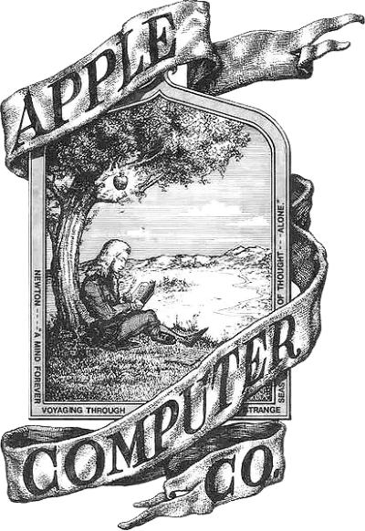
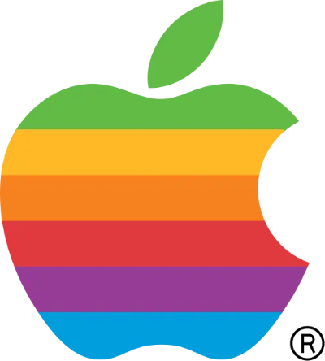
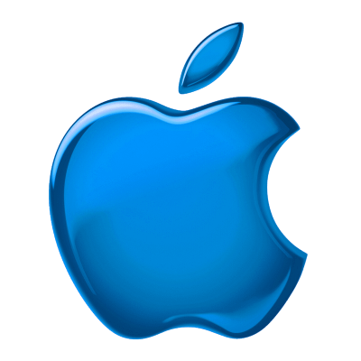
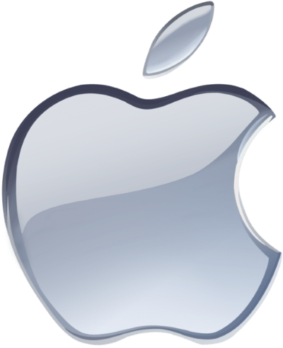
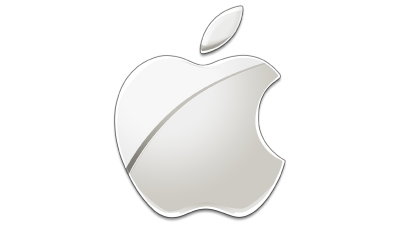
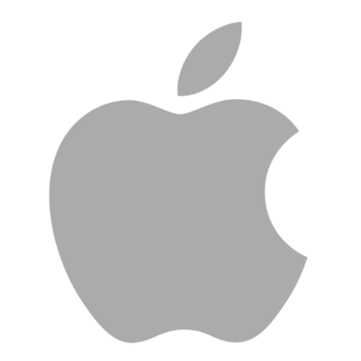

De Newton à Maçã Mordida: A Evolução do Logo da Apple
A Apple é uma das empresas mais icônicas do mundo, e seu logo se tornou um símbolo reconhecido globalmente. No entanto, a identidade visual da marca nem sempre foi a maçã mordida que conhecemos hoje. Ao longo dos anos, o logo passou por transformações que acompanharam a evolução da empresa e sua visão de inovação.
A primeira logo
Isaac Newton sob a macieira (1976)
Quando Steve Jobs, Steve Wozniak e Ronald Wayne fundaram a Apple em 1976, o primeiro logo criado era bem diferente do atual. Ele foi desenhado por Ronald Wayne e retratava Isaac Newton sentado sob uma macieira, simbolizando o momento em que a lenda diz que o cientista descobriu a gravidade ao ser atingido por uma maçã.
O desenho tinha um estilo clássico, semelhante a uma gravura antiga, com uma faixa ao redor contendo o nome “Apple Computer Co.”. Apesar do conceito sofisticado, Jobs acreditava que o logo era muito detalhado e antiquado para uma empresa de tecnologia inovadora.
Surge uma nova logo
A maçã colorida de Rob Janoff (1977)
Com a busca por uma identidade visual mais moderna e impactante, Steve Jobs contratou o designer gráfico Rob Janoff para desenvolver uma identidade visual mais moderna para a empresa, que até então usava um logotipo detalhado de Isaac Newton sob uma macieira.
Assim surgiu a icônica maçã mordida com faixas coloridas. O formato simplificado tornou o logo mais memorável, enquanto as cores simbolizavam a diversidade e a capacidade dos computadores Apple de exibirem gráficos coloridos, algo revolucionário para a época.
A mordida na maçã não foi um mero detalhe estético. Segundo Janoff, ela foi adicionada para evitar que o desenho fosse confundido com uma cereja e, ao mesmo tempo, fazia um jogo de palavras com o termo “byte” (de "megabyte" e "gigabyte"). Essa versão do logo acompanhou o crescimento da Apple por mais de 20 anos, tornando-se um ícone da revolução tecnológica.
O fim das cores e a era minimalista (1998)
A maçã mordida colorida reinou soberana em todos os produtos da Apple por exatos 22 anos e, exceto por breves ajustes feitos pela equipe da empresa através de softwares para torná-la ainda mais simétrica — algo que não estava disponível na época de Janoff — seu formato permanece praticamente inalterado até os dias hoje.
O ícone só foi sofrer sua primeira alteração em 1998, a pedido do próprio Jobs — apenas um ano após retornar à gigante de Cupertino. A Apple, então, começou a usar uma nova versão monocromática do logotipo em algumas embalagens de produtos, como o PowerBook, embora a maçã colorida ainda estivesse presente em coisas como a barra de ferramentas do Mac OS 9. Essa versão é a única da leva de novos designs do final dos anos 1990 e início dos anos 2000 que permanece, de certa forma, em uso até os dias de hoje.
Além da nova versão monocromática, a Apple também estreou no mesmo ano uma edição translúcida, projetada para fazer alusão ao design colorido do iMac G3 e do iBook G3.
Essa iteração, que contava com a clássica cor Bondi Blue do all-in-one apresentado por Jobs, foi usada de forma bem mais breve pela Apple, limitando-se aos produtos que adotaram a linguagem visual translúcida e a poucos itens de merchandising. O design foi finalmente aposentado em 2000.
O logo tridimensional (2001)
Em 2001, a Apple apresentou a logotipo Aqua, que contava um com design tridimensional que parecia ser feito de vidro para combinar com a nova identidade visual do recém-lançado Mac OS X.Essa versão foi adotada de forma hegemônica pela empresa e substituiu de vez o logotipo colorido criado Janoff nos menus do sistema da Apple.
O novo estilo buscava transmitir um certo senso de sofisticação, classe e inovação, já que, nessa época, a Apple começava a assumir postura de “marca de luxo” dos dias de hoje. Para tal, a maçã assumiu um gradiente entre as cores cinza, branco e preto.
A maçã “Aqua” durou sete anos e marcou a transição da empresa daquela linguagem visual colorida e chamativa, do final dos anos 1990, para a filosofia de design mais sóbria da primeira metade dos anos 2000. Foi nessa época, inclusive, que a Apple passou a intensificar o uso do alumínio anodizado em seus designs.
O logo cromado (2007)
Em 2007, ano do lançamento do primeiro iPhone, o logo da Apple apresentava um visual tridimensional com um efeito de brilho metálico, geralmente prateado ou cromado. Esse design refletia a estética futurista da empresa na época, combinando com o visual elegante do MacBook, do iMac e do recém-lançado iPhone.
Esse logo seguiu a identidade minimalista introduzida em 1998, quando Steve Jobs retornou à Apple e eliminou as cores do antigo logo listrado. A versão de 2007 manteve a icônica maçã mordida, mas com um acabamento refinado e moderno, sendo amplamente utilizada até meados de 2013, quando a Apple adotou um design ainda mais simples e chapado.
Visual atual (2013)
Em 2013, a Apple adotou novamente um visual mais minimalista, com um logo em preto ou branco, sem efeitos tridimensionais, e as vezes em um tom de prata/cinza bastante característico. Essa escolha acompanhou a nova identidade visual da empresa, refletida nos sistemas operacionais e no design dos produtos. Esse estilo continua até hoje, reforçando a sofisticação e a simplicidade da marca.
Também não é raro ver a Apple divulgar versões especiais do design atual em comerciais, convites de eventos e páginas de produtos — algo que tem se tornado bem comum nos últimos anos. Essa variedade toda coloca essa versão como a mais versátil já adotada pela empresa até os dias hoje.
Conclusão
O logo da Apple evoluiu ao longo dos anos, refletindo a transformação da empresa e a sua busca constante por inovação e design sofisticado. Desde a imagem detalhada de Newton até a icônica maçã mordida minimalista, a identidade visual da Apple sempre esteve alinhada com sua filosofia: simplicidade, elegância e tecnologia avançada.
Então é isso! Espero que você tenha gostado do nosso artigo com essas curiosidades sobre a Apple.